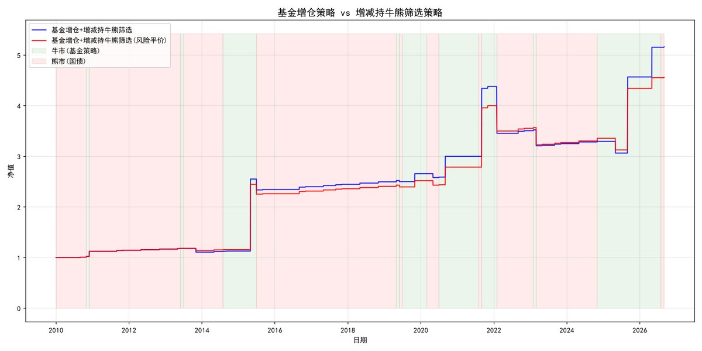
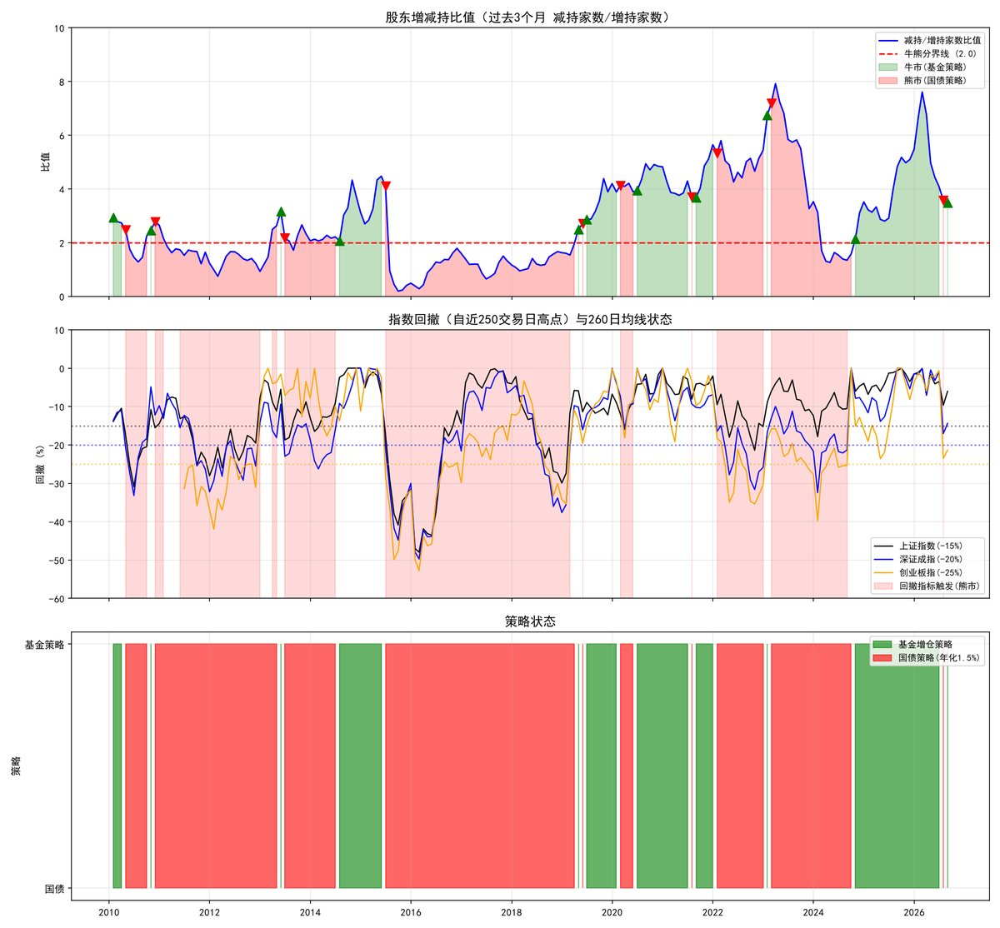
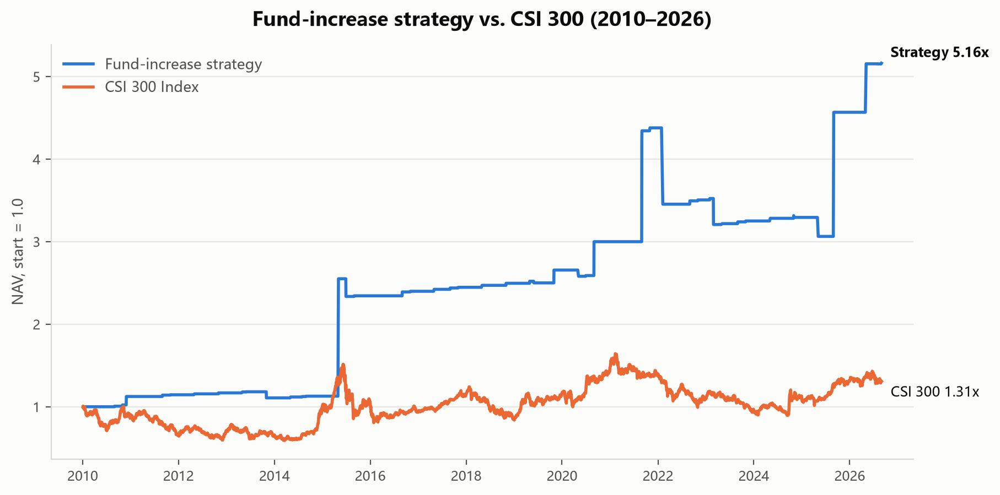

1. Overview
A complete A-share quant research pipeline: a "top-5 by fund increase ratio" stock-selection strategy built on quarterly mutual-fund holdings disclosures, enhanced by a bull/bear regime filter based on shareholder increase/decrease ratios and major index drawdowns — in bear markets the portfolio liquidates into government bonds, in bull markets the stock basket is traded.
- Selection logic: on each quarterly fund-report disclosure date (May 1 / Sep 1 / Nov 1), buy the top-5 stocks ranked by mutual-fund increase ratio;
- Bull/bear rules: the 3-month market-wide "decreasing / increasing holders" ratio > 2 flags a bear-to-bull candidate, then confirmed by drawdowns of the SSE Composite (15%), Shenzhen Component (20%) and ChiNext (25%) plus the 260-day MA; a bull-to-bear signal liquidates at month-end close into 2%-annual government bonds;
- Position weighting: equal weight and risk parity (120-trading-day estimation window at entry);
- Data pipeline: akshare / Eastmoney datacenter API for holder changes, baostock for quotes, local CSV caching.
2. Key code
2.1 Bull/bear filter (core innovation)
"""
牛熊筛选前置指标 —— 股东增减持比值（替换旧的"成交额排名前5%个股成交额占比"指标）
主指标：过去3个月内所有上市公司的增减持记录
比值 = 减持公司家数 / 增持公司家数
- 比值 > 2 → 可能进入牛市（熊转牛候选）
- 比值 < 2 → 可能进入熊市（牛转熊）
回撤确认指标（仅当比值 > 2 时启用）：
上证指数、深证成指、创业板指 自近250个交易日高点的回撤
- 上证回撤超15% / 深证成指回撤超20% / 创业板指回撤超25%
- 或任一指数跌破260日均线
→ 回撤指标满足，判断熊市来临
状态机（信号按月末采样，当月末收盘价执行）：
牛市 = 比值 > 2 且 回撤指标未触发
熊市 = 其他情况（比值 <= 2，或比值 > 2 但回撤指标触发）
- 熊转牛 → 执行公募基金增仓比例策略
- 牛转熊 → 直接清仓，全仓持有国债（年化1.5%），直至下一次熊转牛信号
数据来源：
- 增减持数据：akshare stock_ggcg_em（东方财富-数据中心-特色数据-股东增减持），
akshare不可用时直连东方财富 datacenter API（任意版本akshare均可）
- 指数行情：baostock（sh.000001 / sz.399001 / sz.399006），
baostock不可用时回退 akshare（新浪财经 stock_zh_index_daily）
"""
class ZengJianChiBullBearFilter:
"""股东增减持比值 + 指数回撤 牛熊筛选指标"""
# 三大指数配置: (baostock代码, akshare/新浪代码, 名称, 回撤阈值)
INDEX_CONFIG = [
('sh.000001', 'sh000001', '上证指数', 0.15),
('sz.399001', 'sz399001', '深证成指', 0.20),
('sz.399006', 'sz399006', '创业板指', 0.25),
]
def __init__(self, start_date='2010-01-01', end_date='2026-08-31',
ratio_threshold=2.0, lookback_months=3, peak_window=250,
ma_window=260, bond_annual_return=0.015, cache_refresh_days=7):
"""
:param ratio_threshold: 牛熊分界比值（减持家数/增持家数），默认2
:param lookback_months: 增减持统计回看月数，默认3个月
:param peak_window: 计算回撤的高点回看窗口（交易日），默认250
:param ma_window: 均线窗口，默认260日
:param bond_annual_return: 熊市国债年化收益率，默认1.5%
:param cache_refresh_days: 增减持缓存过期天数
"""
self.start_date = start_date
self.end_date = end_date
self.ratio_threshold = ratio_threshold
self.lookback_months = lookback_months
self.peak_window = peak_window
self.ma_window = ma_window
self.bond_annual_return = bond_annual_return
self.cache_refresh_days = cache_refresh_days
# 数据路径
self.data_path = os.path.dirname(os.path.abspath(__file__))
self.data_dir = os.path.join(self.data_path, 'data')
self.market_data_path = os.path.join(self.data_dir, 'market_data')
self.index_data_path = os.path.join(self.data_dir, 'index_data')
self.results_path = os.path.join(self.data_dir, 'results')
2.2 Strategy body: quarterly event-driven backtest engine
"""
基金增仓策略 + 牛熊筛选回测（股东增减持比值指标）
牛熊规则（前置指标，见 bull_bear_filter_zengjianchi.py）：
- 熊转牛（减持/增持家数比值 > 2 且 指数回撤指标未触发）→ 执行公募基金增仓比例策略
- 牛转熊 → 直接清仓，全仓买入年化2%的国债，直至下一次熊转牛信号
回测引擎（月度事件驱动）：
- 每季度基金报告披露日（5/1、9/1、11/1）买入当季增仓比例前5只
- 每月末检查牛熊信号，当月末收盘价执行：
牛转熊 → 当月末收盘价清仓，转入国债计息
熊转牛 → 当月末收盘价买入当前季度选股组合
- 国债期间按年化2%复利计息（实际天数/365）
持仓加权方案（每次建仓/调仓时估计，仅用建仓日及之前的数据，持仓期内不调权）：
equal 等权（每只 1/N）
risk_parity 风险平价（各资产风险贡献相等，协方差迭代求解，失败回退逆波动率）
估计窗口：建仓日前约120个交易日的日收益率；数据不足时回退等权
"""
class StrategyWithBullBearFilter:
"""基金增仓策略 + 增减持比值牛熊筛选"""
def __init__(self, start_date='2010-01-01', end_date='2026-08-31',
initial_capital=1000000, top_n=5, bond_annual_return=0.02):
# top_n: 持仓股票数，只持有公募基金增仓比例前N只（默认5只）
self.start_date = start_date
self.end_date = end_date
self.initial_capital = initial_capital
self.top_n = top_n
self.bond_annual_return = bond_annual_return
self.est_window = 120 # 风险平价/均值方差的权重估计窗口（交易日）
# 数据路径
self.data_path = os.path.dirname(os.path.abspath(__file__))
self.data_dir = os.path.join(self.data_path, 'data')
self.results_path = os.path.join(self.data_dir, 'results')
os.makedirs(self.results_path, exist_ok=True)
# 初始化策略模块
self.fund_strategy = FundIncreaseStrategySimple(
start_date=start_date,
end_date=end_date,
initial_capital=initial_capital,
top_n=top_n
)
self.bull_bear_filter = ZengJianChiBullBearFilter(
start_date=start_date,
end_date=end_date,
bond_annual_return=bond_annual_return
)
self.backtest_results = {}
def run_backtest(self):
"""运行回测：普通策略 vs 牛熊筛选策略"""
print("=" * 80)
print("基金增仓策略 + 牛熊筛选回测（股东增减持比值指标）")
print("=" * 80)
# 1. 牛熊信号
print("\n[1/3] 计算牛熊筛选信号...")
signals = self.bull_bear_filter.generate_signals()
if signals.empty:
print("无法生成牛熊信号，回测终止")
return
self.bull_bear_filter.cleanup()
# 2. 基金增仓选股结果
print("\n[2/3] 获取基金增仓策略选股结果...")
fund_selections = self._get_fund_selections()
if not fund_selections:
print("无选股结果，回测终止")
return
# 3. 回测
print("\n[3/3] 运行回测...")3. Backtest results
Initial capital ¥1,000,000; backtest window 2010-01-01 → 2026-08-31; monthly event-driven execution:
| Metric | Fund-increase + bull/bear filter (equal weight) | Fund-increase + bull/bear filter (risk parity) |
|---|---|---|
| Total return | 416.1% | 355.9% |
| Annualized return | 10.34% | 9.53% |
| Max drawdown | -30.0% | -21.9% |
| Win rate | 50.0% | 48.5% |
Yearly returns show strong bull-market capture (2015: +107.8%, 2021: +46.0%, 2025: +38.7%) while the bond-fleece mechanism keeps bear-year losses in single digits (2018: +2.0%, i.e. bond yield). The risk-parity variant narrows the drawdown further to -21.9%.


Comparison with the CSI 300 over the same period

Why is the Sharpe ratio relatively low?
4. Technical highlights
- Event-driven engine: quarterly rebalance + month-end signal checks, bond accrual by actual days/365;
- Risk-parity solver: covariance iteration with fallback to inverse-volatility, then equal weight;
- Data robustness: direct Eastmoney API fallback when akshare fails, Sina fallback when baostock fails, cache expiry;
- Visualization: matplotlib equity curves, regime-signal charts and yearly-return distributions.